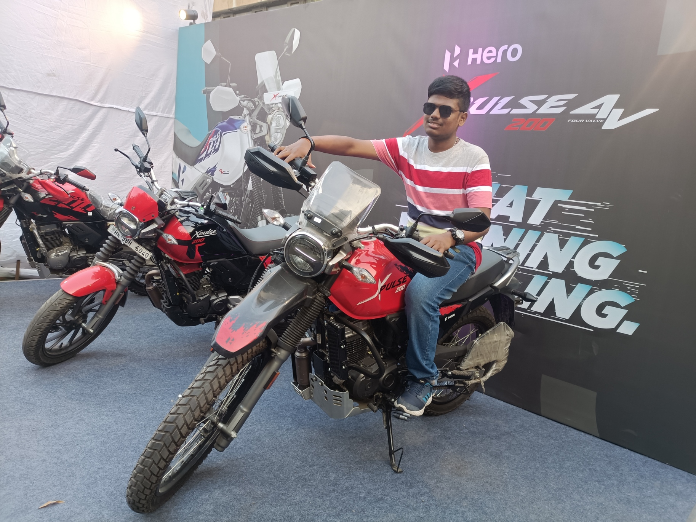

Competencies
Machine Learning Engineer
A snapshot of practical impact across agentic intelligence, core systems engineering, and peer-reviewed algorithmic research.
Architecting production-grade conversational intelligence at Eightfold AI. Designing stateful LangGraph reasoning loops, dynamic contextual probing, and real-time evaluation graphs for enterprise AI Interviewing.
Spearheaded enterprise OS migration from CentOS 7 to RHEL 9 at Cohesity across on-premises and hybrid cloud environments. Re-architected low-level networking, SELinux enforcement, and REST APIs for IPMI telemetry.
Formulated exact Min-cost network flow bipartite matching alternatives for transformer-based object detection (DETRs). Published as first-tier peer-reviewed research at WACV 2024 (CVF).

I'm a Machine Learning Engineer at Eightfold AI focused on high-reliability AI systems. I graduated in Computer Science from IIT Delhi ('23) with an emphasis on artificial intelligence, deep learning, and distributed infrastructure.
My technical focus spans the boundary between high-level reasoning models and bare-metal systems—from tuning reinforcement learning alignment (PPO, DPO, GRPO) and tool-use protocols (MCP) to Linux kernel network hardening and low-level C++ architectures.
Roles spanning autonomous AI workflows, large-scale enterprise OS migrations, and low-level systems engineering.
Impact: Building the autonomous AI Technical Interviewer to deliver human-caliber candidate evaluations with zero hallucinated scoring.
Technical Scope: Architected stateful multi-step execution graphs in LangGraph, integrated streaming LLM response loops, and built real-time WebSocket orchestration for dynamic conversational probing.
Impact: Led the company-wide OS transition from end-of-life CentOS 7 to RHEL 9 across hybrid multi-cloud and on-prem enterprise clusters with zero unplanned customer downtime.
Technical Scope: Overhauled SELinux confinement profiles, refactored firewall packet routing, and resolved low-level Linux networking bottlenecks across distributed storage node appliances.
Impact: Designed high-throughput RESTful management microservices powering hardware diagnostics and automated chassis discovery across cluster nodes.
Technical Scope: Built programmatic IPMI telemetry daemons, storage drive health checks, and low-latency hardware abstraction layers in C++ and Go.
Impact: Uncovered fundamental failure modes in transformer one-to-one Hungarian matching on crowded pedestrian datasets, producing our WACV 2024 publication.
Technical Scope: Formulated an exact Min-cost-flow bipartite matching algorithm supporting many-to-one assignments, achieving consistent miss-rate reductions across CrowdHuman benchmarks.
Impact: Accelerated the qualification and deployment of Cohesity Next-Generation Cloud Edition (NGCE) clusters on Google Cloud Platform.
Novel algorithms addressing transformer assignment bottlenecks in computer vision.
In this paper, we investigate why transformer-based object detectors suffer in crowded pedestrian benchmarks compared to traditional CNNs. We formulate an exact Min-cost-flow bipartite matching algorithm supporting many-to-one assignments, yielding substantial drops in miss rates across challenging benchmark datasets (CrowdHuman and CityPersons).
Autonomous conversational system for candidate technical assessment. Employs stateful execution graphs, automated contextual probing, and real-time evaluation with deterministic guardrails.
Min-cost network flow assignment engine solving the bipartite matching bottleneck in DETR architectures for dense pedestrian occlusion. Published at WACV 2024.
Secured 3rd place in Cohesity's company-wide Capture The Flag competition, solving advanced problems in binary exploitation, reverse engineering, cryptography, and network security.
Specialization in Artificial Intelligence & Deep Learning.
GPA: 8.64 / 10.0
Mathematics, Physics, Chemistry.
Grade: 10.0 / 10.0
Foundational Sciences & Mathematics.
Grade: 9.8 / 10.0
How persistent, 24/7 background agents are replacing conversational chatbots with autonomous multi-step execution, sandboxed microVMs, and personal knowledge graphs.
An architectural and mathematical deep dive into modern alignment algorithms—from classical actor-critic PPO to direct preference optimization and DeepSeek's GRPO.
Tracing computing interaction paradigms and why Anthropic's Model Context Protocol (MCP) is becoming the standard for tool-using LLMs.
 Python
Python
 Go
Go
 C++
C++
 Java
Java
 C
C
 PyTorch
PyTorch
 HuggingFace
HuggingFace
 OpenCV
OpenCV
 NumPy
NumPy
 Pandas
Pandas